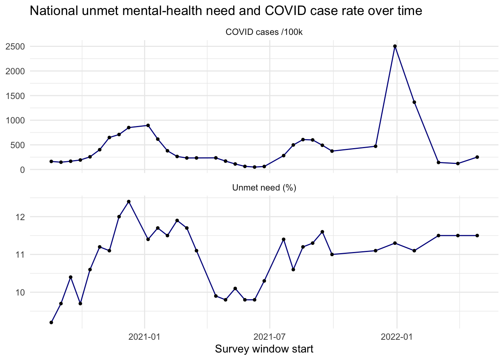
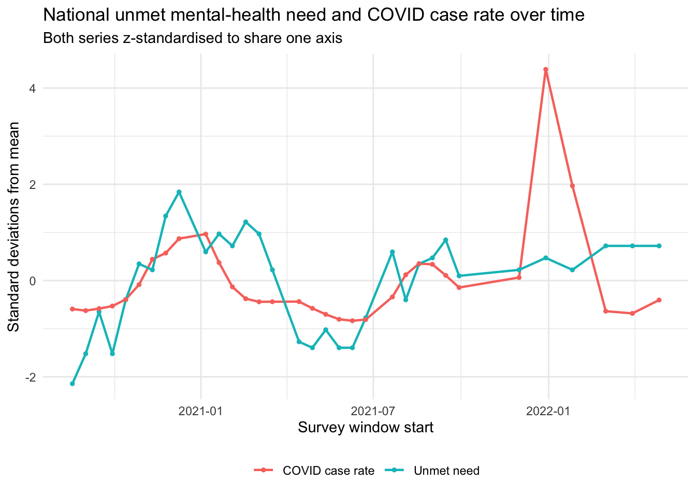

COVID-19 infection rates and unmet mental-health need
Authors
Cedric Fernolend
Peiyue Liu
Published
July 21, 2026
We ask whether US states hit harder by COVID-19 also reported higher unmet need for mental-health support. The cleaning and joining happen in code/01_download.R → code/02_clean.R; this page loads the processed result and answers the two research questions.
Code
library(tidyverse)library(here)joined <-read_csv(here("data", "processed", "covid_mentalhealth_joined.csv"),show_col_types =FALSE)national <-read_csv(here("data", "processed", "covid_mentalhealth_national.csv"),show_col_types =FALSE)# National series used throughout RQ2rq2 <- national |>arrange(win_start) |>filter(!is.na(unmet_need), !is.na(covid_rate))rq2_diff <- rq2 |>mutate(d_need = unmet_need -lag(unmet_need),d_cov = covid_rate -lag(covid_rate))
RQ1: Does COVID intensity relate to unmet mental-health need?
Question. Across US states and survey windows, is a higher COVID-19 case rate associated with a higher share of adults who needed counseling but did not receive it?
The unit of analysis is one state in one survey window (n = 1676). The response is unmet_need (% of adults); the predictor is covid_rate (new COVID cases per 100,000 residents accumulated over the survey window). We estimate an ordinary least squares regression and report the slope with its 95% confidence interval.
Code
m1 <-lm(unmet_need ~ covid_rate, data = joined)summary(m1)
Call:
lm(formula = unmet_need ~ covid_rate, data = joined)
Residuals:
Min 1Q Median 3Q Max
-7.2449 -1.5453 -0.1423 1.4414 10.2448
Coefficients:
Estimate Std. Error t value Pr(>|t|)
(Intercept) 1.051e+01 7.327e-02 143.433 < 2e-16 ***
covid_rate 5.434e-04 1.057e-04 5.142 3.03e-07 ***
---
Signif. codes: 0 '***' 0.001 '**' 0.01 '*' 0.05 '.' 0.1 ' ' 1
Residual standard error: 2.277 on 1674 degrees of freedom
Multiple R-squared: 0.01555, Adjusted R-squared: 0.01496
F-statistic: 26.44 on 1 and 1674 DF, p-value: 3.034e-07
Code
# Population claim -> report the coefficient with its 95% CI, not just the p-value.cbind(estimate =coef(m1), confint(m1))
ggplot(joined, aes(x = covid_rate, y = unmet_need)) +geom_point(alpha =0.3, colour ="steelblue") +geom_smooth(method ="lm", se =TRUE, colour ="red") +labs(title ="Higher COVID case rates track slightly higher unmet mental-health need",subtitle ="Weak but statistically significant positive association across states and windows",x ="New COVID cases per 100k during the survey window",y ="% adults who needed counseling but did not get it" ) +theme_minimal()
`geom_smooth()` using formula = 'y ~ x'
Scatter plot of unmet mental-health need against COVID case rate. Each point is one US state in one Household Pulse survey window. The fitted ordinary least squares line is shown with its 95% confidence band.
RQ2: How did need and COVID co-move nationally over time?
Question. Following the country as a whole rather than comparing states, did national unmet need and the national COVID case rate rise and fall together between August 2020 and April 2022?
The unit of analysis is one survey window (n = 33). We describe the relationship graphically and with three statistics: the Pearson product-moment and Spearman rank correlations in levels, and the Pearson correlation of first differences, which removes any shared level or trend that could otherwise generate a spurious level correlation.
Code
national |>select(win_start,`Unmet need (%)`= unmet_need,`COVID cases /100k`= covid_rate) |>pivot_longer(-win_start) |>ggplot(aes(win_start, value)) +geom_line(colour ="darkblue") +geom_point(size =1) +facet_wrap(~name, ncol =1, scales ="free_y") +labs(title ="National unmet mental-health need and COVID case rate over time",x ="Survey window start", y =NULL) +theme_minimal()

Two-panel time series of national unmet mental-health need (top) and the national COVID-19 case rate (bottom), by survey window, Aug 2020 to Apr 2022, shown in their original units.
Code
rq2 |>mutate(across(c(unmet_need, covid_rate), \(x) as.numeric(scale(x)))) |>select(win_start,`Unmet need`= unmet_need,`COVID case rate`= covid_rate) |>pivot_longer(-win_start) |>ggplot(aes(win_start, value, colour = name)) +geom_line(linewidth =0.8) +geom_point(size =1) +labs(title ="National unmet mental-health need and COVID case rate over time",subtitle ="Both series z-standardised to share one axis",x ="Survey window start",y ="Standard deviations from mean",colour =NULL ) +theme_minimal() +theme(legend.position ="bottom")

The same two national series, z-standardised so they share a common axis. Standardisation removes the differing units and scales, so vertical distance between the lines is directly interpretable as divergence in relative movement.
Pearson product-moment and Spearman rank correlation, first differences: window-to-window changes
Code
# Levels: Pearson product-moment and Spearman rank correlationcor.test(rq2$unmet_need, rq2$covid_rate)
Pearson's product-moment correlation
data: rq2$unmet_need and rq2$covid_rate
t = 2.303, df = 31, p-value = 0.02815
alternative hypothesis: true correlation is not equal to 0
95 percent confidence interval:
0.04478712 0.64136829
sample estimates:
cor
0.3822192
# First differences: window-to-window changescor.test(rq2_diff$d_need, rq2_diff$d_cov)
Pearson's product-moment correlation
data: rq2_diff$d_need and rq2_diff$d_cov
t = 0.27675, df = 30, p-value = 0.7839
alternative hypothesis: true correlation is not equal to 0
95 percent confidence interval:
-0.3035721 0.3922554
sample estimates:
cor
0.05046368
Pearson product-moment and Spearman rank correlation, first differences: window-to-window changes (pre-omnicron)
Code
# Is the relationship stable across the whole period, or does it break down# during the Omicron surge of winter 2021-22?pre_omicron <- rq2 |>filter(win_start <as.Date("2021-12-01"))cor.test(pre_omicron$unmet_need, pre_omicron$covid_rate)
Pearson's product-moment correlation
data: pre_omicron$unmet_need and pre_omicron$covid_rate
t = 5.1955, df = 25, p-value = 2.249e-05
alternative hypothesis: true correlation is not equal to 0
95 percent confidence interval:
0.4689179 0.8639802
sample estimates:
cor
0.7205358
# A tibble: 1 × 1
first_difference_r
<dbl>
1 0.135
In levels, the association is moderate and positive: Pearson r = 0.38 (95% CI [0.05, 0.64], p = 0.028), with a somewhat stronger Spearman rank correlation of ρ = 0.53, indicating a monotonic rather than strictly linear relationship.
In first differences, however, the association essentially vanishes: r = 0.05 (p = 0.78).
Interpretation
RQ1
The association is positive, statistically significant, and substantively weak. The slope of 5.4 × 10⁻⁴ (95% CI [3.4 × 10⁻⁴, 7.5 × 10⁻⁴], p < 0.001) implies that moving across the full observed range of case rates — from essentially zero to roughly 5,000 cases per 100,000 in a single window — corresponds to an increase in unmet need of only about 2.8 percentage points, against an outcome that itself ranges from roughly 3% to 21%. The model explains approximately 1.6% of the variance (R² = 0.016).
The narrow confidence interval and small p-value should therefore not be read as evidence of a strong relationship. They largely reflect the statistical power conferred by a large sample (n = 1,676 state-window observations): with this many observations, even a negligible effect is estimated precisely enough to exclude zero. Statistical significance and practical importance diverge sharply here.
Because the observations are state-level aggregates, the estimate describes a relationship between populations, not between individuals, and is exposed to the ecological fallacy — the pattern across states need not hold for any individual. The design is observational, so the coefficient is an association and carries no causal interpretation.
RQ2
In levels, the correlation is moderate and positive (Pearson r = 0.38, 95% CI [0.05, 0.64], p = 0.028; Spearman ρ = 0.53, indicating a monotonic rather than strictly linear relationship). In first differences, the association essentially disappears (r = 0.05, p = 0.78).
That full-period summary, however, conceals a structural break. Restricting the series to the first two pandemic waves (all windows before December 2021) the level correlation nearly doubles to r = 0.72 (n = 27, p < 0.001). Across 2020 and most of 2021 the two series do track one another closely: unmet need rose and fell broadly in step with the autumn 2020 and winter 2020–21 waves.
The relationship then breaks down during the Omicron surge. The window beginning 29 December 2021 recorded roughly 2,504 cases per 100,000 — about three times the peak of the previous winter — yet unmet need stood at 11.3%, lower than the 12.4% observed during the far smaller December 2020 wave.
Two cautions apply. Excluding a period because it does not fit is a form of post-hoc selection, so r = 0.72 should be read as evidence that the relationship is unstable across the period, not as a better estimate of a single underlying association. And even pre-Omicron the first-difference correlation remains weak (r = 0.135, p = 0.51), so the co-movement is a matter of shared levels and broad trend rather than synchronized wave-by-wave changes.
Opinion: By winter 2021–22 vaccination was widespread, restrictions were minimal, and widely-used home tests went largely unreported. A given case count therefore corresponded to far less societal disruption, and far less measured infection.
Synthesis
Taken together, the two research questions show a weak but detectable signal between states and showcasing a correlated movement for the first two covid waves, which broke down at the omnicron infection surge. A possible explanation for the co-movement during the first two covid waves, could be, that the results of a surging infection rate would influence the policies regarding prevention of further outbreaks (social distance, working from home, …). This pattern did not hold for the omnicron surge around early 2022, where restrictions became more minimal and vaccinations were widespread.
Limitations
Outcome construct. “Needed counseling but did not get it” is a proxy, not a direct measure of need: it conflates underlying need with barriers to access, and over-represents people newly seeking support while excluding those already being helped. Key determinants of mental-health need (healthcare capacity, socioeconomic composition ,…) are unobserved. Most importantly, high case rates coincided with lockdowns and social distancing, which plausibly drove need themselves. Under that account the case rate proxies policy stringency and isolation, making the association indirect rather than causal.
Missing data. Estimates suppressed by NCHS for unreliability are dropped. Suppression occurs because a subgroup sample was small, so the mechanism is not missing at random (MNAR). For our used data, 7 rows (0.42%) were missing.
Each observation is a whole state in one survey window, not a person. We therefore cannot tell whether the adults reporting unmet need are the same adults affected by COVID.